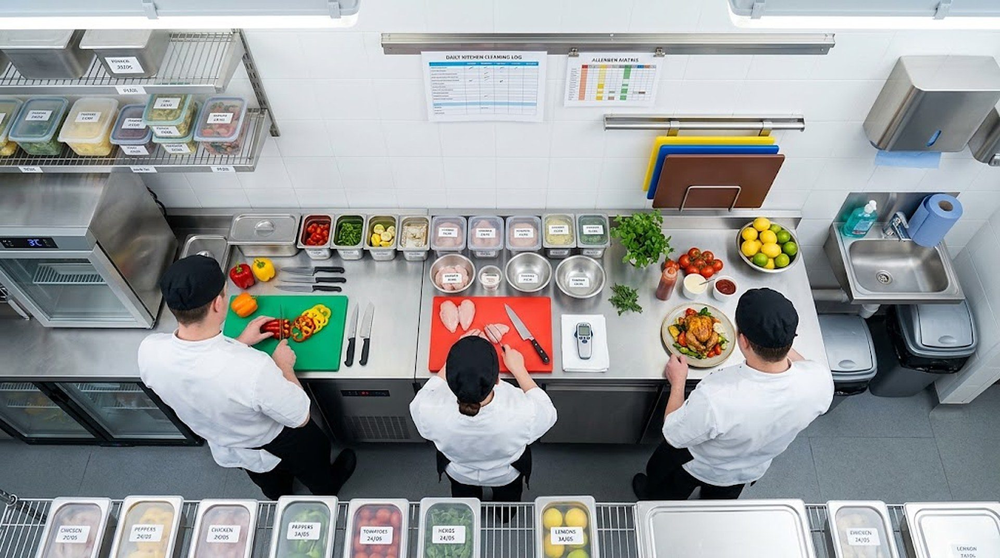
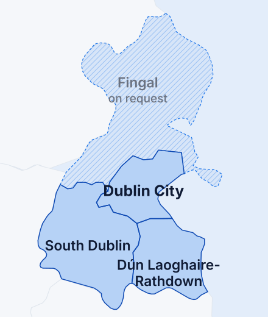
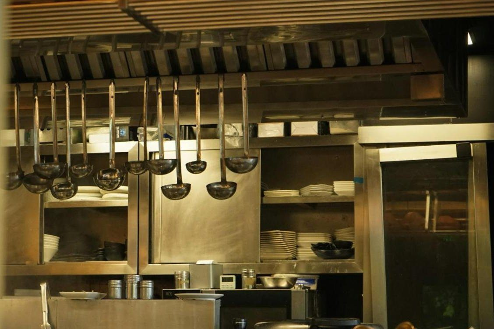

Never be on the FSAI list.
A mock EHO inspection of your kitchen: the same 45 points the inspector checks, probe readings, photos, and a written action plan within 24 hours. Then a membership that keeps you inspection-ready every month.
What inspectors wrote in Dublin kitchens
Every closure order is published on fsai.ie the following month, business name and street included. These lines are from orders served in Dublin 1 and Dublin 2 in 2024.
"A staff member when questioned advised that a hot holding unit should be operated at 4°C."
Takeaway, Dublin 1. Closed May 2024."Monitoring records were not available since 24/4/2024 for the following activities; delivery, storage, cooking."
Cafe and bakery, Dublin 1. Closed May 2024."This non-compliance has been detailed in previous inspection letters dated 15/04/2024, 04/03/2024, 08/03/2023, 10/10/2022 and 30/08/2022."
Takeaway, Dublin 2. Closed May 2024.A training record, a daily log and one person checking would have prevented all three. That is what we set up and keep running.
Booked this week, report in your inbox 24 hours after the visit
Book a 90-minute slot
Before or after service, any day including Saturday. Pay €349 on booking. Nothing to prepare; we want to see the kitchen as the inspector would.
We walk your kitchen
45 points across 8 areas. Probe readings, photos, your records opened, and your staff asked the questions an EHO asks. Nothing is reported to anyone but you.
Action plan within 24 hours
Each item in the inspector's own structure: the regulation, what we saw, the risk, the fix and a deadline. Join a membership within 14 days and the €349 is credited against your first month.
The 45 points, in 8 areas
The checklist follows the FSAI Guide to Food Safety Skills and the Safe Catering Pack, so every finding maps to a paragraph an inspector can cite.
Plus the three things a checklist cannot see: your training records, how your newest hire answers a question, and whether your Safe Catering Pack is running or sitting on a shelf.
Less than one closed lunch service, every month
Every plan includes unlimited staff training seats. Turnover is your problem, not a reason to pay per head.
For a single kitchen that wants the file in order and a number to call.
For a kitchen that has had a letter, a scare, or a new manager, and wants someone in the building every quarter.
For cafe groups, pub groups, hotels with more than one kitchen and creche operators.
Three-month minimum, then cancel by email. Annual prepay is 10 percent less. The €349 mock inspection is credited against your first month if you join within 14 days. Prices exclude VAT.
Fixed fees for the bad week
Half a day on site, a written response item by item, and a 30-day follow-up so the next visit is clean.
On site within 48 hours. Two days: action plan, records rebuilt, staff retrained on the floor, mock re-inspection, and we attend the real one.
Every dish and drink, the 14 allergens, cereal and nut named, decant labels, and your Deliveroo and Just Eat listings brought into line. Up to 60 items.
Every new hire trained and signed off before their first shift, in 7 languages, with the FSAI training record written for you. Launching October. €19 a month locked for 12 months for the first 20 sites.
| SKILL | ASSESSED | OUT |
|---|---|---|
| 1Personal hygiene | 22 Sep | S |
| 3Hand-washing | 23 Sep | RT |
| 6Safe handling | 23 Sep | S |
Independent kitchens with 4 to 15 staff, and the groups that run several
If English is not your team's first language, that is not a problem. Induction materials are in English, Portuguese, Polish, Romanian, Spanish, Hindi and Chinese, and we train on the floor, not in a classroom.

We check the person, the paperwork and the premises

Straight answers
Is this an official inspection?
No. It is a private pre-inspection audit by an independent consultancy. We are not part of, approved by or endorsed by the Food Safety Authority of Ireland or the HSE, and neither body approves or endorses any consultant. Nothing we find is reported to anyone but you.
We were inspected last month. Why would we need this?
Then you have the letter. We close every item on it and document the fix, so the follow-up visit is a formality. One Dublin 2 takeaway received six letters over 21 months before it was closed; the letter is the warning, not the end.
We already use a HACCP app.
Keep it. The app logs the fridge. The inspector asks your newest hire what temperature it should be, opens your training records and looks under the sink. We cover the parts the app cannot.
Do our staff get certificates?
Yes. Level 1 and Level 2 food safety skills certificates, issued after the training and an on-the-job competency check, plus the Employee Training Record in the FSAI's own format. That combination is what the law asks for and what an inspector looks at.
What if we do badly on the mock inspection?
That is the point of doing it with us first. You get a ranked plan, the urgent items marked for today, and a second walk-through included if you join a membership.
How fast can you come?
Mock inspections are booked within the week, including Saturdays. If you have been served an order or a notice, we are on site within 48 hours.
Book before the inspector does.
A 90-minute visit this week, a plan in your inbox the next morning, and the €349 credited back when you join.